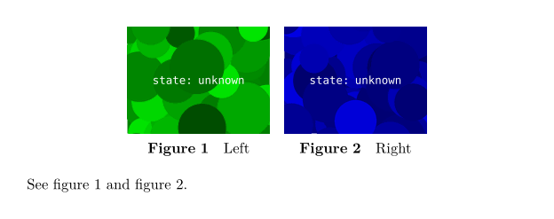

Contents
Summary
A number of float objects arranged in a matrix.
Settings
| \startfloatcombination[...=...,...] ... \stopfloatcombination | |
| ...=...,... | inherits from \setupcombination |
Settings matrix
Description
A floatcombination is a number of float objects arranged in a matrix, with an optional caption below each object. It is used for nested floats.
Examples
A simple float combination
\useMPlibrary [dum] \starttext \startplacefigure [location=none] \startfloatcombination [nx=2, ny=1] \startplacefigure [title=Left, reference=fig:left] \externalfigure \stopplacefigure \startplacefigure [title=Right, reference=fig:right] \externalfigure \stopplacefigure \stopfloatcombination \stopplacefigure See \in{figure}[fig:left] and \in{figure}[fig:right]. \stoptext
- 